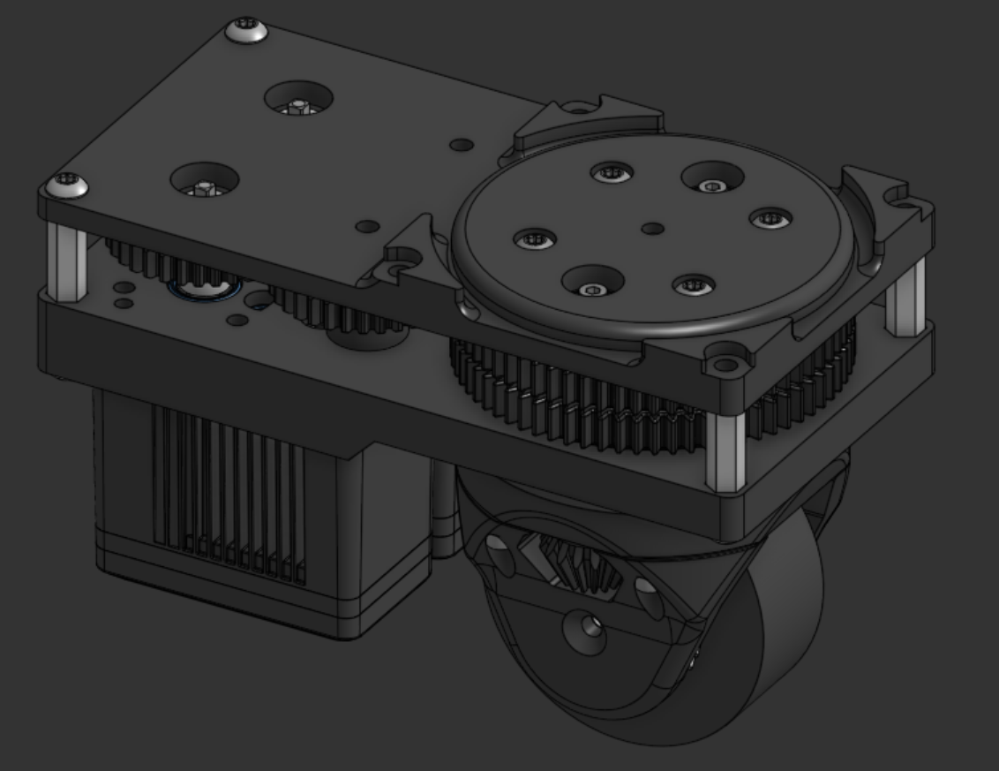

Differential Swerve Drive Module
Redesigned a drivetrain into a differential swerve system with full holonomic motion and double the traction.
Team project on the VEX U team. I led the design of the printed bearing surfaces and cages, the wheel bevel gear packaging, and the cast wheel, and contributed throughout the rest of the design process.

Problem
The 2025 to 2026 VEX U season rewards robots that can move in any direction and change heading quickly. The drivetrain had to be holonomic, comply with the game manual, run smoothly with little maintenance, and be powered by at least eight drive motors combined.
Fitting motors, a planetary gearbox, and a differential into one small module was the core packaging challenge. Standard bearings were too large and hard to find in the sizes needed, so the bearings had to be designed into the printed parts.
What I built
- Printed ball bearings. 2 mm steel balls ride on 1 mm steel wire inlaid into the printed rings, giving a hard, wear resistant race that plastic alone can't provide.
- Printable geometry. The rings are shaped to print with minimal or no supports, so the small parts come out with a clean bearing surface.
- Integrated into the gearbox. Building the bearings into the planetary stage allowed compact stacks of planetary gears.
- Bearing cages. Cages hold the balls evenly spaced around the ring. Clearances are tight, so the ring and cage must be printed accurately.
- Wheel fabrication. The wheel required a high-strength polyurethane tread, epoxy, and a cast core. The design packages a curved wheel contact patch to increase traction while maintaining a small footprint and low center of gravity.
Results
The module delivered full holonomic motion while significantly improving traction via the differential gearing. The design remained compact enough to fit in the robot and was simplified for manufacturing under team constraints.
Tools
VEX U drivetrain design, parametric CAD, printed bearings, cast wheel design, gear packaging